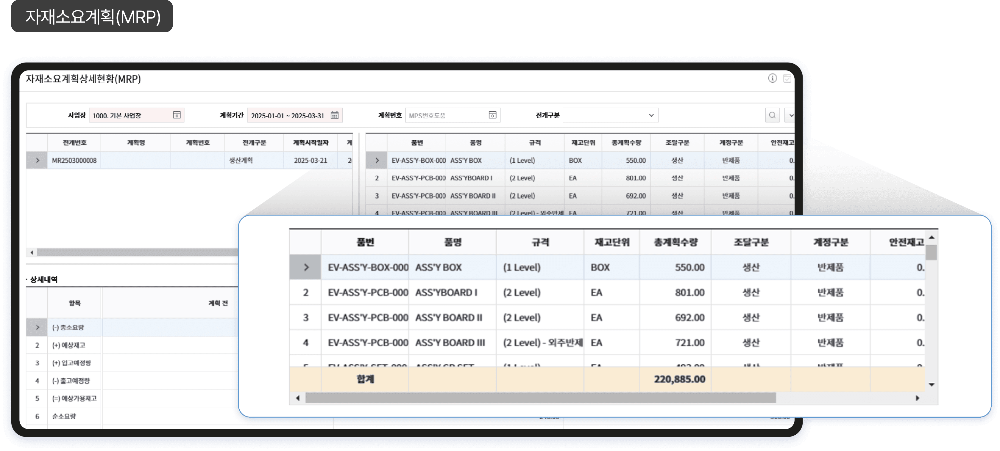
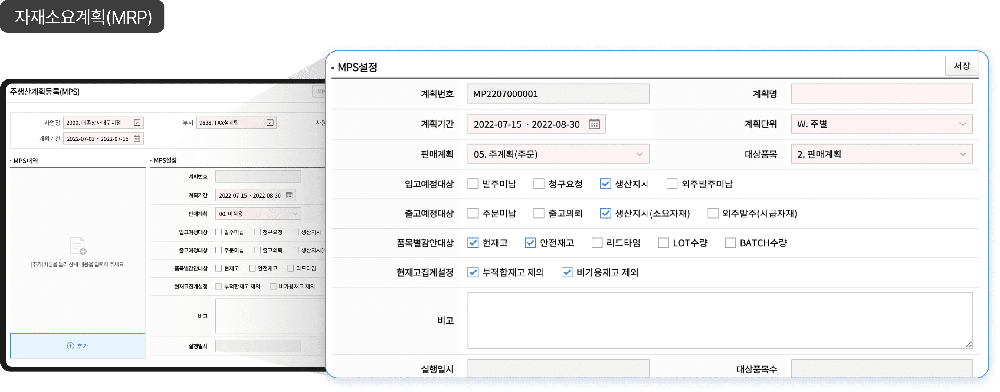
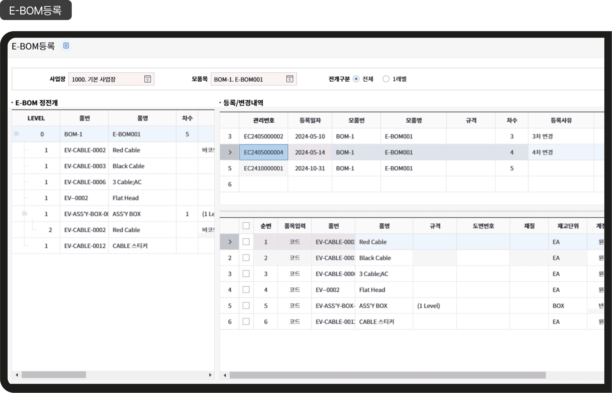
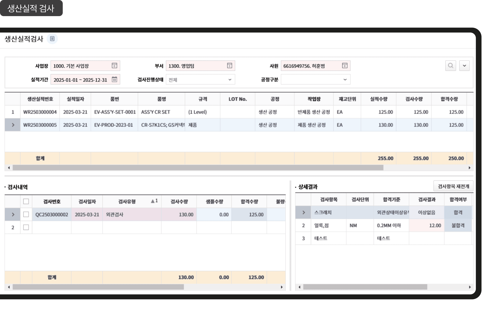
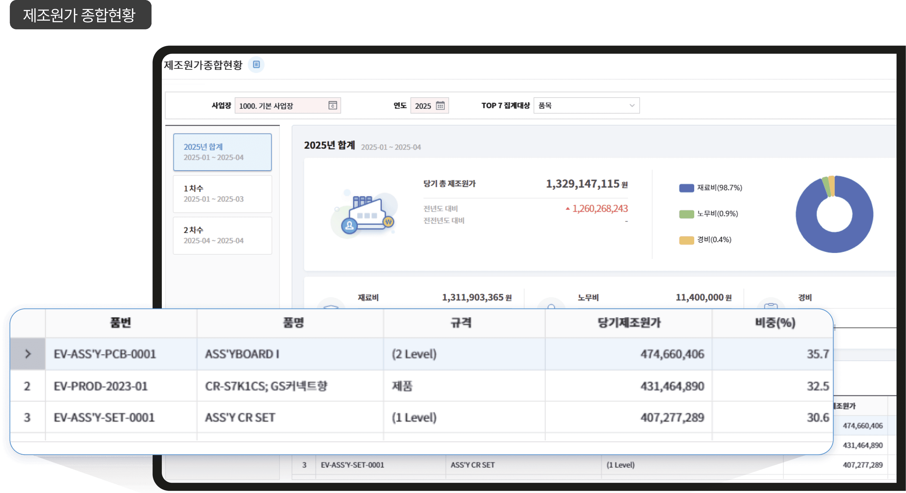

물류관리(생산)
생산 계획부터 실적, 원가까지 하나로 연결됩니다. Amaranth 10은 다양한 생산유형에 맞춰
계획 수립, 실적 관리, 원가 계산까지 자동화하여 제조현장의 생산성과 정확성을 높입니다.
다양한 MRP 전개
각 기업의 생산 방식에 맞춰
자재 소요 계획을 유연하게 수립할 수 있습니다.
판매 계획, 고객주문, MPS 등 다양한 전개 기준에 따라 자재 소요를 계산할 수 있습니다.
복잡한 수작업 없이 전개 옵션만 선택하면 MRP가 자동 생성됩니다.
프로세스별 이력과 계획 대비 실적을 기반으로 신속한 의사결정이 가능합니다.

생산유형에 따른 프로세스 자동화(MPS)
단계별 자동화와 간편 실적관리를 통해
현장의 생산관리 부담을 줄입니다.
생산지시는 전자결재를 연동하여 자재불출부터 체계적으로 통제됩니다.
BOM 기반으로 자재를 자동 산정하고, 실적 입력은 간편화되어 인력 부족 상황에도 대응 가능합니다.
생산유형에 따라 표준 또는 단순 프로세스로 설정하여, 기업 상황에 맞는 최적 운영이 가능합니다.

다양한 BOM 전개
설계부터 공정까지 BOM 체계를 통합해,
품질과 추적성을 동시에 확보합니다.
E-BOM을 통한 설계정보 반영과 공정별 자재투입 시점 관리를 제공합니다.
시제품 단계의 부품 이력 추적, 프로젝트 단위 BOM 운영도 가능합니다.
거래처별 BOM을 구분 관리하여, 맞춤형 납품 프로세스를 지원합니다.

체계적인 공정관리
생산지시를 기반으로 공정별 자재 불출 및 실적관리, 불량관리 등을 통해
체계적인 공정관리가 가능합니다.
생산지시를 기반으로 공정별 생산 및 외주 실적을 일원화하여 체계적으로 공정을 관리할 수 있습니다.
다양한 검사항목 설정을 통해 품질관리 업무를 지원하고, 검사 결과를 시스템화하여 성적서 출력까지 가능합니다.

제조원가 통합 관리(부분별/제조별/요소별)
생산 실적 기반의 정밀한 원가 분석으로
수익성을 예측하고 통제할 수 있습니다.
가공비, 재료비, 간접비를 기준별로 구분해 배부하고, 기준원가와 실제원가 차이도 분석할 수 있습니다.
재공 상태의 반제품까지 포함해 품목별 제조원가를 산출합니다.
원가 대시보드를 통해 현재 비용 흐름과 수익 구조를 시각적으로 파악할 수 있습니다.
